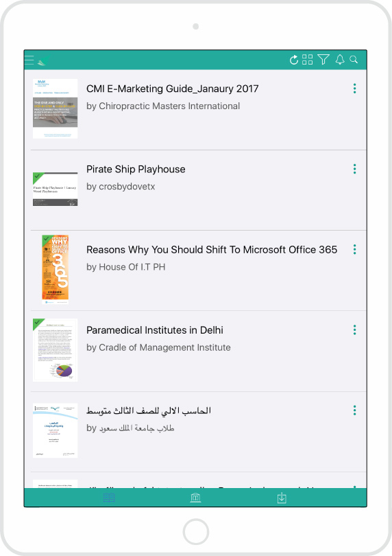
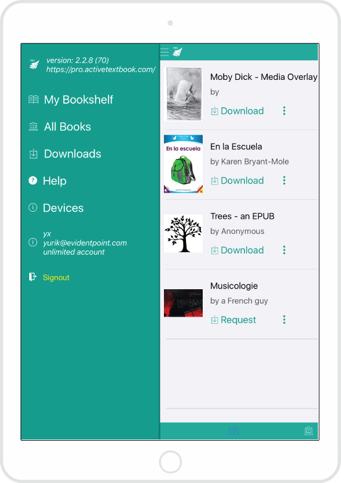
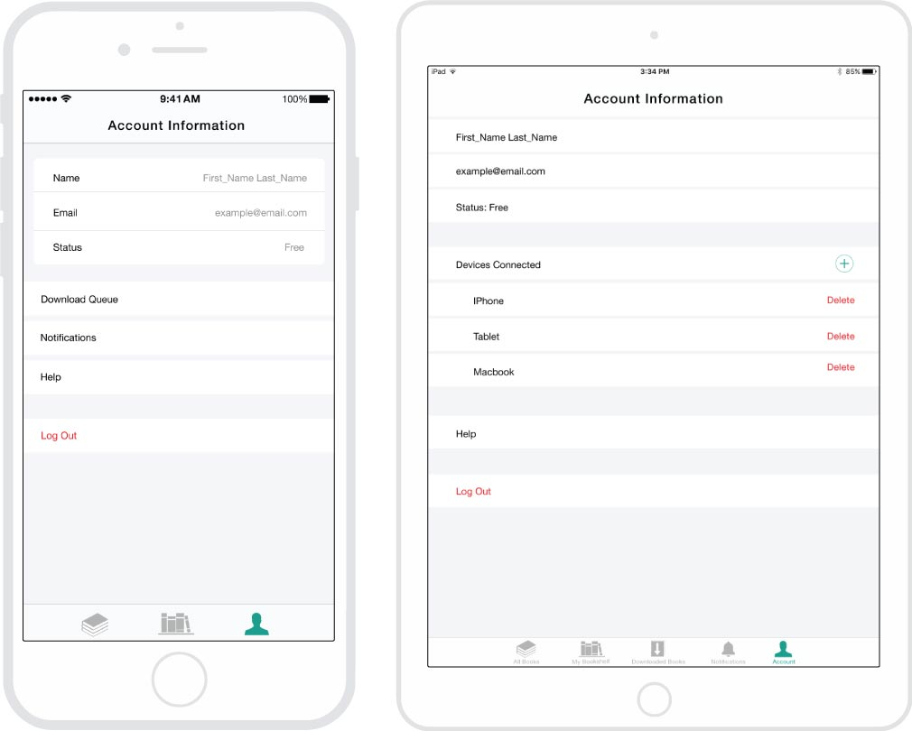
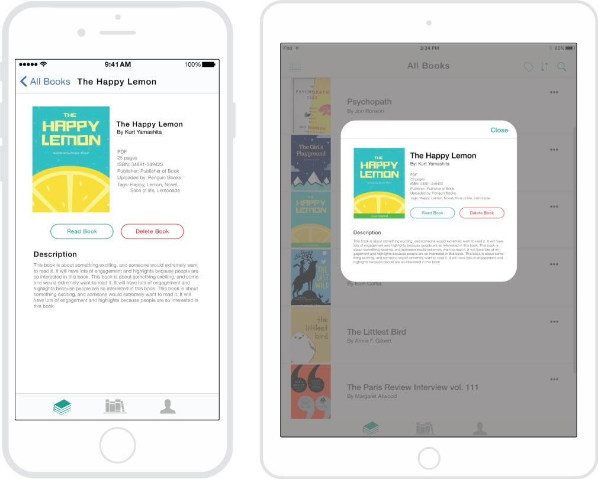
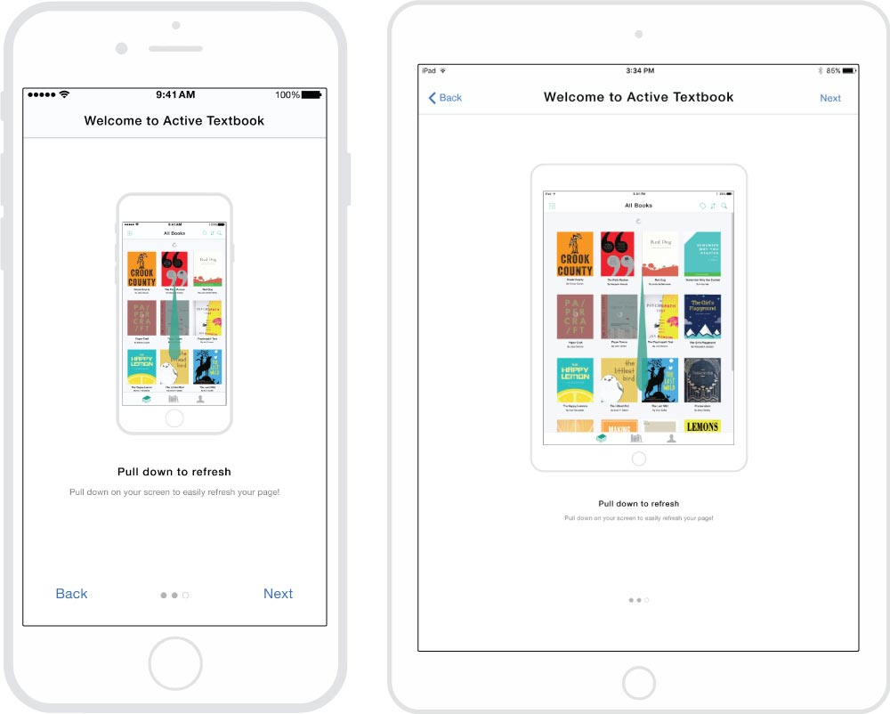
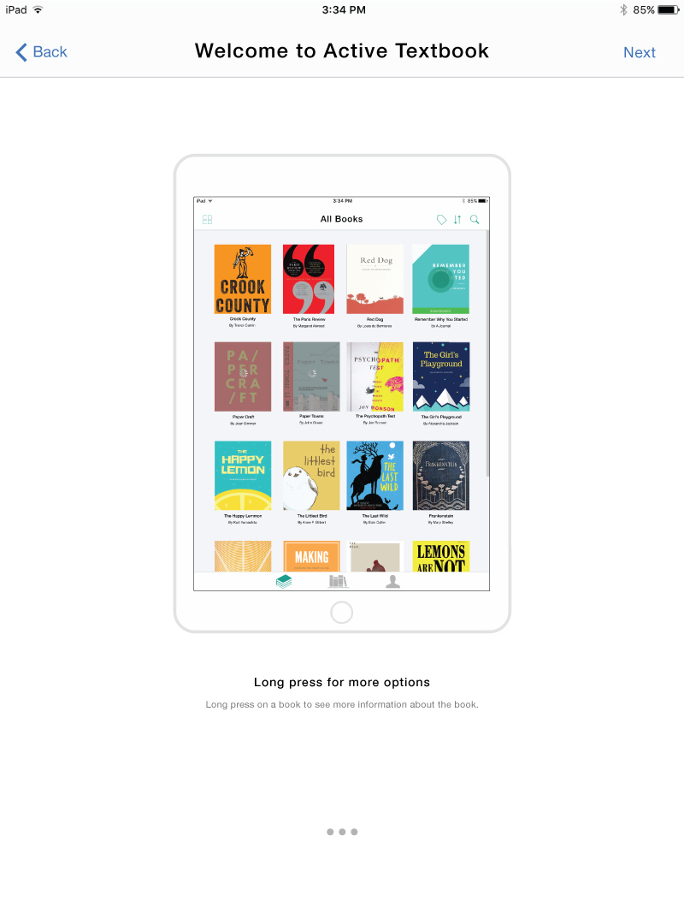

I worked at a software company called Evident Point as a UX Designer. They asked me to re-design their iOS app to make it more "app-like".
This was an individual project, I did all the research and design myself. I went to my co-workers to get information and insight about the existing applications to further my research.
The reason the app wasn’t “app-like” was because it the book covers were not uniform . Also, the elements on the app is missing white space or padding.
Another reason is that some interactions don’t actually exist in iOS therefore, it looks weird in the app. Like the floating information icon on the book covers.
However, the app's main problem was that it's not user friendly as a lot of the interactions were not intuitive or clear. Like the navigation bar at the bottom, blue was used to highlight the selected tab on a green navigation bar. Or the combination of using a hamburger menu and a bottom navigation bar.
Cover view for the books
List view for the books
Hamburger menu
To start off, I talked to people who are responsible for the app, to see where they thought existing problems were or where they thought the app could improve.
Then I looked into the design guidelines of apple. In attempts to make it more “app-like” and to learn apple’s design language.
Elements that inspired the redesign of the active textbook app
I looked into the actions a user would take if they were to use the app, or what purpose they would have when they are using the app.
I made mockups using Adobe Illustrator for each screen that was needed from the research.
Here are some variations of grey scale mockups I did of the same screen to test how the placement of elements would work with each other.
High fidelity mock-ups are effective for allowing the developer and my supervisor to get a better understanding of how the visual design and the elements interact with each other in the app.
After every iteration, I would email it to the supervisor and developer. Then a meeting will be held to discuss and critique my designs. After the meeting, I would go back and make changes to the mockups and present them again.
Here are examples of high fidelity mockups of both iphones and ipads
Cover View

List View
Account Tab
Book Description
In the presentation slides I put in annotations describing the purpose and details of each element. This way, people reviewing my mockups will know what the purpose of each element is.
Example of presentation slides
After finishing the mockups, I presented it to my co-worker and supervisor. We would discuss what we could be iterate upon. There were some difficulties with discussing the features in the app.
Specifically, how the user will be able to find more information about the book in cover view. I came up with a few solutions, but the supervisor didn’t find the need to change the way book details was being accessed.
Cover book views that can't access "More Options" of a book
In the end, I kept iterating upon the design and convinced my supervisor on a solution that we were both happy with. Instead of having a floating icon, the user can access details about the book through a long press on the book. However, the user won’t be able to know about this action without instructions, therefore, I added onboarding to the app.
The chosen design option for accessing "More Options" of a book
I wasn't completely happy with the solution of adding an onboarding to let the user know the interactions needed to access parts of the app, because not all people read or go through the onboarding. So they can actually miss the information. Also, onboarding can also be a lot of information to intake at once for the user, therefore I don't think it is the best solution, but it is a solution that my employer agreed to, to keep the design I made.
Onboarding: Step 1
Onboarding: Step 2
Onboarding: Step 3